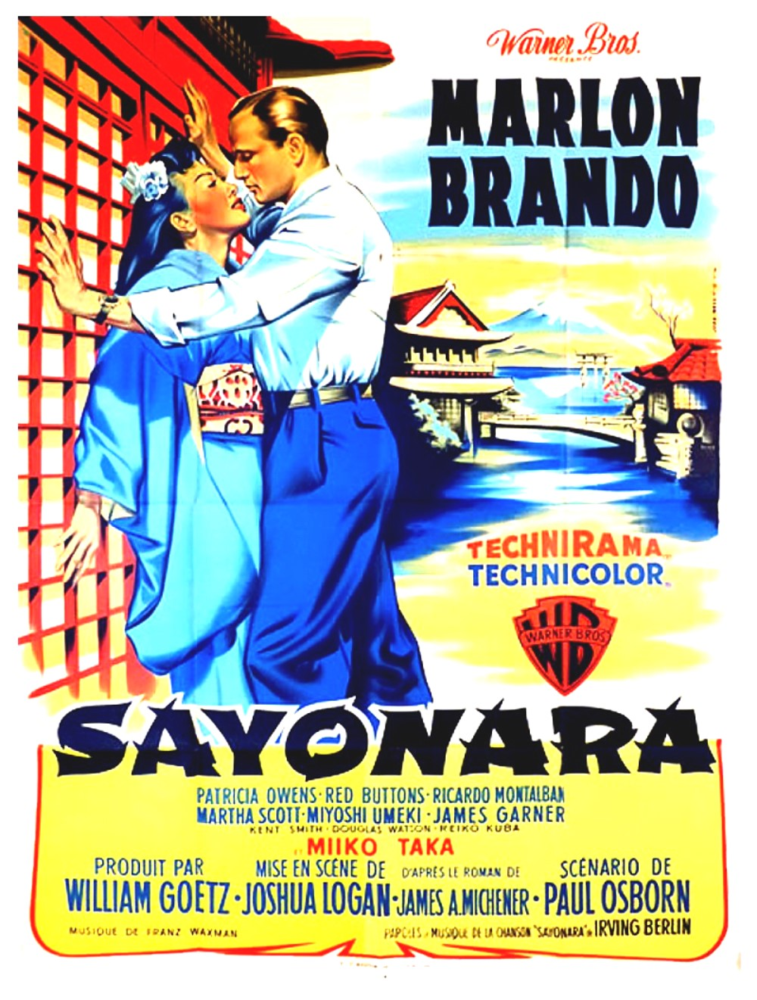

Sayonara
30th Academy Awards
(Oscars 1958)
10 Nominations, 4 Awards
| Nominations | ||
|---|---|---|
| Category | Nominees | Result |
| Best Motion Picture | William Goetz | Nominated |
| Actor | Marlon Brando | Nominated |
| Actor in a Supporting Role | Red Buttons | Won |
| Actress in a Supporting Role | Miyoshi Umeki | Won |
| Directing | Joshua Logan | Nominated |
| Writing (Screenplay--based on material from another medium) | Paul Osborn | Nominated |
| Cinematography | Ellsworth Fredricks | Nominated |
| Film Editing | Arthur P. Schmidt and Philip W. Anderson | Nominated |
| Art Direction | Robert Priestley and Ted Haworth | Won |
| Sound Recording | George Groves | Won |